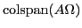
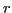
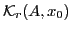

Many iterative partial eigenproblem solvers have been developed to
address the difficulties of computational and storage cost of direct
eigensolvers. Krylov subspace solvers may be considered ``classic''
algorithms for large or sparse eigenproblems; much research effort has
been devoted to developing sophisticated Krylov subspace solvers with
fast convergence that are also robust against numeric imprecision.
Krylov subspace solvers are not without challenges, which has
motivated alternate means for computing eigenvalue-eigenvector pairs
for large, sparse matrices. Random sampling methods have also yielded
simple and elegant algorithms for approximately solving the
eigenproblem, with as few as one sparse matrix-dense matrix
multiplication [4]. Despite performing only one pass over the matrix,
random projection methods produce good eigenvalue approximations and
are robust against numeric imprecision. Though these two methods were
developed independently, they have notable theoretical and practical
similarities. We will note the success of the random
sampling methods to motivate use of short block Krylov subspaces for
eigenvalue approximation. These spaces will be similar to those
produced by Halko et. al.'s one-pass algorithm, but with a narrower
starting block than a one-pass algorithm and with more iterations.
Short block Krylov subspaces will be also robust to round-off error.
In some cases, short block Krylov subspaces will produce better
leading eigenvalue approximations and have compute time advantages
over random sampling methods. We will study cases in which extension
of the block Krylov subspace by only a small amount improves the error
residuals nontrivially. We will explain the good performance of the
one-pass algorithm in terms of harmonic Ritz pairs. These results
also suggest application of short block Krylov subspaces to generic
dimension reduction problems similar to the approaches suggested
in [2, 3].
Halko et. al. proposed several eigenvalue approximation
methods [4], among them, algorithms for
one-pass eigenvalue approximation. This one-pass eigenvalue
approximation method produces eigenvalue approximations that are
remarkably accurate, despite only requiring one pass over the data.
Given a Hermitian matrix  and random sampling matrix
and random sampling matrix  , the
eigenproblem is approximated in
, the
eigenproblem is approximated in

. Not only is a block Krylov subspace, but it also is generated by one iteration of the band Lanczos routine [1] when used with a random start block. The space is also the shortest block Krylov subspace to contain harmonic Ritz values. The one-pass algorithm is relatively robust to round-off error. Halko et. al. compared their algorithms against the Lanczos and Arnoldi algorithms, but only the single vector variants; they note that the ordinary single-vector Lanczos or Arnoldi algorithms are more prone to floating point imprecision than the one-pass random sampling method. Little or no effort is required to stabilize the one-pass algorithm.
The one-pass
method due to Halko et. al. uses the same subspace as one iteration of
the band Lanczos algorithm when the start block is random. Moreover,
a random start block is typically used to initialize a Krylov subspace
for solving the eigenproblem. Block Krylov subspaces are known to
have advantages over single vector methods when eigenvalues are
tightly clustered and multiple eigenvalues are
required, but Halko et. al. only
considered one and two pass algorithms. This motivates use of short
block Krylov subspaces for eigenvalue approximation, beyond the
used in the one pass algorithm.
One may produce a subspace of equivalent dimension by reducing the
block size and performing more Lanczos or Arnoldi iterations.
Reduction of the block size coupled with extension of the block Krylov
subspace by a small number of iterations will unlikely spoil the
robustness to round-off error or deflation. More iterations will
produce much better eigenvalue approximations, especially in the
extremum of the spectrum. We note that in some cases, dramatic
improvements in eigenpair approximations and magnitudes may be
realized by performing a small number of band Lanczos iterations with
a narrower start block instead of a one-pass algorithm. Eigenproblem
applications which minimize a matrix norm, such
as low-rank matrix approximation, may benefit from better
approximation and larger magnitudes of extreme eigenvalues, even if it
is at the expense of interior eigenvalues. Whether a one-pass
algorithm with a large start block or a short Krylov subspace with a
narrower start block produces a better matrix norm residual depends
on the distribution of eigenvalues; we will study the trade-offs for
various eigenvalue distributions. Reducing the block size will also
lead to compute time advantages through better exploitation of
locality.
Utility of short band Krylov subspaces is not limited to eigenvalue approximation. Various publications have advocated short Krylov subspaces for generic dimension reduction problems [5, 2, 3]; short band Krylov subspaces will be applicable in these domains as well. Generally speaking, generic dimension reduction applications of Krylov subspaces use a short Krylov subspace in which some Ritz pairs have not converged as an alternate for a eigenspace or singular vector space for generic dimension reduction. These applications are distinct from classic Krylov subspace methods to solve the eigenproblem as they do not expand the Krylov subspace until all required eigenpairs have converged. Rather, to effect a reduction to

dimensions, the problem is simply projected into
. The existing work on Krylov subspaces for generic dimension reduction has not used block Krylov subspaces; their use may improve the effectiveness of the dimension reduction.
[1] Z. Bai, Templates for the solution of algebraic eigenvalue problems,
vol. 11, Society for Industrial Mathematics, 2000.
[2] Katarina Blom and Axel Ruhe, A krylov subspace method
for information retrieval, SIAM J.
Matrix Anal. Appl. 26 (2005), 566-582.
[3] J. Chen and Y. Saad, Lanczos vectors versus singular vectors for
effective dimension reduction, IEEE Transactions on Knowledge and Data
Engineering (2008), 1091-1103.
[4] N. Halko, P.G. Martinsson, and J.A. Tropp, Finding structure with
randomness: Probabilistic algorithms for constructing approximate matrix
decompositions, SIAM review 53 (2011), no. 2, 217-288.
[5] H.D. Simon and H. Zha, Low-rank matrix approximation
using the Lanczos
bidiagonalization process with applications, SIAM Journal on Scientific
Computing 21 (2000), no. 6, 2257-2274.